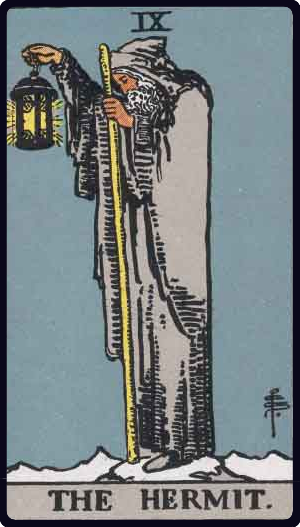
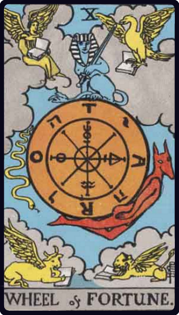

너의 타로는?
생년월일로 보는 나의 타로 프로필
카드를 해석하는 중...
나의 탄생카드
탄생카드는 내가 타고난 중심 성향을 의미합니다.
 8
힘
8
힘
기본 의미
인내, 용기, 내면의 힘
카드 설명
사자를 부드럽게 다루는 장면이 핵심인 카드입니다.
이 카드를 가진 사람은
겉보다 속이 훨씬 강하고 오래 버티는 힘이 있습니다.
1997 + 10 + 17 = 2024 -> 2 + 0 + 2 + 4 = 8
페르소나 카드
페르소나 카드는 사회 속에서 드러나는 나의 얼굴을 의미합니다.
 11
정의
11
정의
기본 의미
균형, 공정함, 판단
카드 설명
칼과 저울을 든 인물이 두 기둥 사이에 앉아 있습니다.
이 카드를 가진 사람은
사회 속에서 기준과 균형을 중요하게 여기는 모습으로 드러납니다.
탄생카드 축약 과정에서 11이 나타나 페르소나 카드로 읽습니다.
날개 카드
내 카드처럼 살지 못할 때 나타나는 모습
날개 카드는 내가 내 카드답게 살지 못할 때 기울어지는 방향을 의미합니다.
 7
전차
7
전차
기본 의미
승리, 전진, 통제
카드 설명
서로 다른 힘을 한 방향으로 몰아가는 전차의 이미지가 핵심입니다.
이 카드를 가진 사람은
중심을 놓치면 속도와 의지가 먼저 나오는 쪽으로 기울 수 있습니다.
날개 카드 = 탄생카드 8 - 1 -> 7
← 옆으로 넘겨보세요 →
연도별 흐름
2023

9 전차지난해의 에너지를 정리합니다.
10 + 17 + 2025 = 2052 -> 2 + 0 + 5 + 2 = 9
2024

10 힘올해 당신을 관통하는 핵심 키워드입니다.
10 + 17 + 2026 = 2053 -> 2 + 0 + 5 + 3 = 10
2025
11
은둔자
11
은둔자
다음 해에 다가올 변화의 예고입니다.
10 + 17 + 2027 = 2054 -> 2 + 0 + 5 + 4 = 11